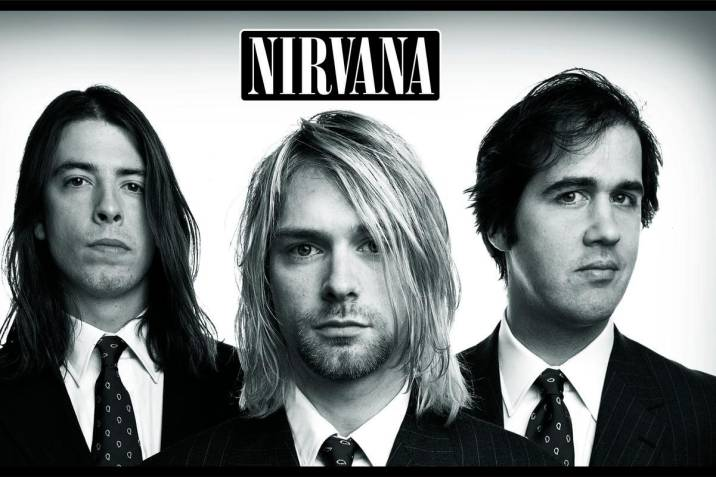
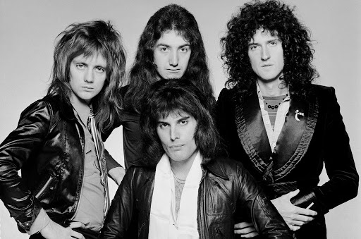

ME GUSTA ESCUCHAR MUSICA Y TOCAR LA GUITARRA
MUSICA QUE ME GUSTA
Podría considera que soy una persona que le gusta todos los géneros musicales a excepción del reguetón y creo que mis géneros favoritos son el ROCK AND ROLL, el HEAVY METAL, el POP y la música ELECTRÓNICA
MIS BANDAS FAVORITAS
Dentro de mis bandas favoritas se encuentra METALLICA, IRON MAIDEN, GUNS AND ROSES, SCORPIONS, JUDAS PRIEST, GREEN DAY, MOLOTOV, NIRVANA y QUEEN de estas la que más me gusta es METALLICA, NIRVANA Y QUEEN siempre me ha gustado como suena la batería en el rock y la guitarra la verdad es que considero que las bandas anteriormente mencionadas estaban llenas de grandes músicos, me gustan muchas de sus canciones, y como dije he escuchado la mayoría de canciones de METALLICA y no he terminado por que tienen una gran discografía.

|
 |
|  |
También como había mencionado me gusta el pop me gusta mucho escuchar a MICHAEL JACKSON a los BLACK EYES PEAS, LADY GAGA me gusta mucho escuchar música cuando hago tarea ya que me hace más ameno el realizarla, también me gusta mucho ver videos de cómo se hacen las canciones y como se escucha cada parte de la misma por separado, cuando escucho la música me gusta prestarle atención a los instrumentos en particular luego solo le presto atención a la batería o el bajo.
También me gusta mucho la música instrumental y la música de guitarra clásica, de hecho, aprendí a tocar la guitarra y cuando tengo tiempo libre practico un poco con ella, dentro de los grupos de música clásica que me gusta escuchar esta ERA me gusta mucho el estilo que tienen.